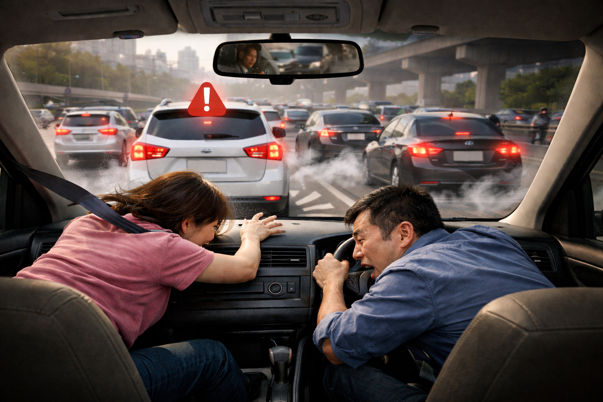

Pada jam sibuk pagi hari, sebuah mobil melaju di jalan raya yang cukup padat. Pengemudi menjaga kecepatan karena kondisi lalu lintas terlihat lancar. Namun, beberapa meter di depan, sebuah kendaraan tiba-tiba berhenti sehingga pengemudi harus menginjak rem secara mendadak.
Akibat pengereman tersebut, mobil berhenti secara tiba-tiba, tetapi tubuh pengemudi dan penumpang justru terdorong ke depan. Salah satu penumpang hampir membentur dashboard karena tidak menggunakan sabuk pengaman. Beberapa kendaraan di belakang juga harus mengerem keras agar tidak terjadi tabrakan beruntun.
Situasi ini menimbulkan perbedaan pendapat di antara mereka. Penumpang beranggapan bahwa tubuhnya terdorong karena ada "gaya dorong dari kursi". Pengemudi berpendapat bahwa dorongan itu terjadi karena mobil kehilangan gaya gerak. Sementara itu, seorang petugas lalu lintas yang melihat kejadian tersebut mengatakan bahwa peristiwa ini berkaitan dengan sifat benda yang cenderung mempertahankan keadaannya, meskipun ada gaya yang bekerja.
Perbedaan pandangan ini menimbulkan pertanyaan penting: mengapa tubuh penumpang tetap bergerak ke depan saat mobil direm mendadak, dan bagaimana cara paling efektif untuk mengurangi risiko cedera akibat peristiwa tersebut?
Masalah ini perlu dianalisis menggunakan konsep Hukum I Newton (hukum inersia) untuk menentukan solusi yang tepat dan memberikan alasan ilmiah atas solusi tersebut.
